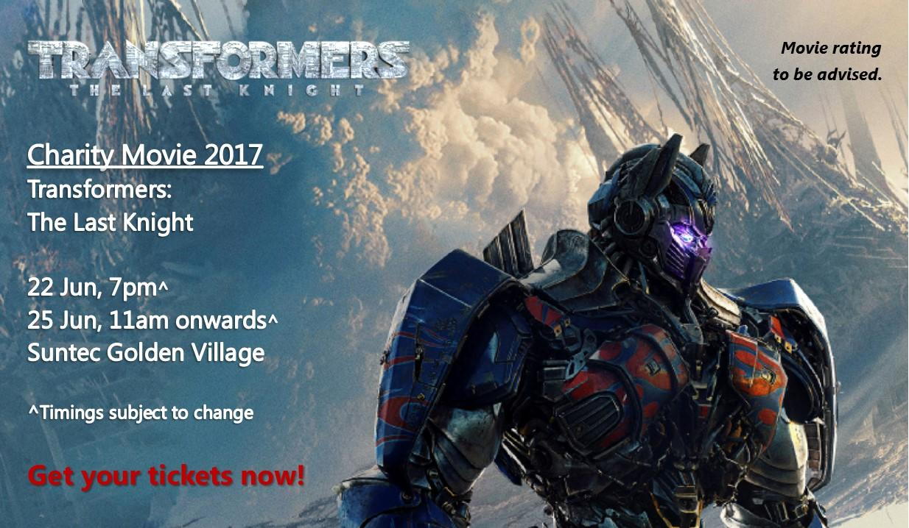
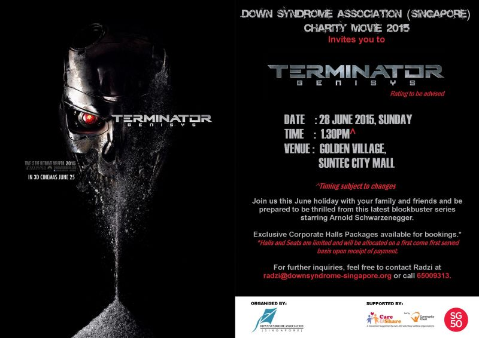

Annual Events
World Down Syndrome Day

Date: 16 March 2019, Saturday
Time: 8am - 3pm
Venue: Our Tampines Hub, Central Plaza
Guest of Honour: Mr Ong Ye Kung, Minister for Education
Celebrated on 21 March annually, World Down Syndrome Day is a global event to raise awareness and exemplify the abilities of persons with Down syndrome while advocating equal rights for them.
This year’s theme of “Leave No One Behind” highlights the lack of understanding within the community about the potential of our persons with Down syndrome. Hence the importance for everyone to come together, embrace differences and walk along with our persons with Down syndrome towards an inclusive society!
The funds raised will contribute to DSA’s support services, educational and enrichment programmes. Your generous support can come in one of the following ways:
- Register and participate in our Buddy Walk
- Set up stalls (e.g. food, games, merchandise) at our mini carnival
- Put up a performance at the event
- Donate products or gifts for goodie bags / lucky draw prizes for the event
-Make an outright donation to DSA(S)
-Raise funds through own initiatives for the DSA in the month of March
The funds raised will contribute to DSA’s support services, educational and enrichment programmes. Your generous support can come in one of the following ways:
- Register and participate in our Buddy Walk
- Set up stalls (e.g. food, games, merchandise) at our mini carnival
- Put up a performance at the event
- Donate products or gifts for goodie bags / lucky draw prizes for the event
-Make an outright donation to DSA(S)
-Raise funds through own initiatives for the DSA in the month of March
DSA Charity Bowl

In March every year, DSA organises the Charity Bowl as another platform for the community to integrate with persons with Down syndrome in a sporting environment.
Teams of four, three players from the sponsoring company and one from DSA, compete for the title of champion to stand a chance of winning the ultimate prize, as well as a trophy and bragging rights. Companies can sponsor lanes and everyone play together.
DSA Charity Movie
Join us for some movie magic with The Charity Movie event!
Held every June, our members are entertained by the latest family-friendly blockbusters of the year while DSA raises funds for educational, training and enrichment programmes. Purchase some tickets and have a visual treat!
Mystique – Charity Gala Dinner
An annual event every October that has been around for 12 editions, Mystique is a night of glitz and glamour is held for our members to showcase their artistic and creative talents they have developed from our enrichment classes in the presence of an esteemed guest. It aims to raise funds for the continuation of our educational and enrichment programmes.
Interested donors may contribute by buying/sponsoring tickets, goodie bags, lucky draw prizes, or items for auction.
Upcoming Events
-
FSS Event: DSA Medical PassportOpen or Close
With the Medical Passport, healthcare staff will be able to understand your needs more easily.
Kindly call Janet at 6500 9304 for enquiry and purchase.
Available for purchase at DSA Bishan Centre for only $7 each (member), $20 each (Non-member) -
FSS workshop: SG Enable Mobile APP Sharing WorkshopOpen or Close
Date: 16 Feb 2019, Saturday, 11am - 12pm
Venue: DSA Centre, Studio 1, #09-01, 9 Bishan Place, Junction 8 Office Tower
The SGEnable Mobile App is a collaboration between SGEnable and LTA to help people with disabilities such as visual or physical impairment travel more conveniently. -
FSS event: Chinese New Year Celebration 2019Open or Close
Date: 16 Feb 2019, Saturday, 12pm - 2pm
Venue: DSA Centre, Piazza, #09-01, 9 Bishan Place, Junction 8 Office Tower
Come join us for a joyous welcoming of the Year of the Pig and network with the other members of DSA! There will be mass group games and craft activities, carolling of Chinese New Year songs and buffet lunch!
To sign up, please submit your online registration on EventBrite -
DSA(S) Recycling ProjectOpen or Close
Objective: To raise funds for DSA(S) support services, education and enrichment programmes for our persons with Down syndrome.
Collection Period: 30 Dec 2018 to 29 Mar 2019 Collection Area: Serangoon, Hougang, Buangkok, Tampines, Simei and Pasir Ris Items: Newspaper, Clothing, Old Appliances & others
Authorised Collector: Vita Green Waste Management and New Jetsan (UEN Number: 53379114J)
NCSS Approval Number: 2018121241 and 2018121246 -
Past Events
2018
-
World Down Syndrome Day 2018Open or Close
We were heartened to have more than 2,000 people, including DSA(S) members and their families, joining us at Dhoby Ghaut Green on the morning of 17th March 2018 to celebrate World Down Syndrome Day.
This year’s theme of “What I Bring To My Community – Advocating rights and opportunities for meaningful contributions” fully embodies the mission of DSA(S), which is to advocate for equal opportunities, quality of life and persons with Down syndrome’s contribution to society. -
Charity Bowl 2018Open or Close
24 teams from 10 organisations with 24 DSA(S) Bowlers participated in the event, which was held at a new venue this year at Orchid Bowl at Our Tampines Hub. We were pleased to have Mr. Lim Teck Yin,CEO of Sport Singapore, gracing the event.
-
Charity Movie 2018Open or Close
We were delighted to welcome the start of the June holidays with our donors, members and volunteers and be among the first few to catch the premiere screening of the sci-fi blockbuster series – SOLO: A Star Wars Story on 24th May 2018. A second screening took place on 27th May 2018.
With the support of our sponsors and donors, we managed to raise over $200,000 through our annual Charity movie. -
Mystique XIIOpen or Close

Into its 12th year, DSA(S) Charity Gala Dinner, Mystique XII is a platform for our members to showcase their artistic and creative talents through artworks and performances. The artworks and performances for the dinner are designed to this year theme of “Saving Gaia”, which includes the four key elements - Wind, Water, Fire and Earth to raise awareness of environmental issues.
-
2017
-
World Down Syndrome Day 2017Open or Close
WDSD was held on 18 March 2017 at Dhoby Ghaut Green, with Mr Gan Kim Yong, Minister of Health, as Guest-of-Honour and attended by more than 600 people. The theme for this year’s WDSD was “My Voice, My Community—Enabling People with Down syndrome” to speak up, be heard, and influence government policy and action, to be fully included in the community.
-
Charity Bowl 2017Open or Close
290 people attended the event was held at Mount Faber SAFRA, on 25 March 2017. With three bowlers nominated by the lane sponsor and one DSA(S) bowler, the team from Qool Enviro Pte Ltd continued to dominate the event and defended their champion title and their second team even took the spot for 2nd place as well. 3rd place went to Inprodec Associates Pte Ltd. In addition, King’s Team and Trailblazers Foundation took 4th and 5th place respectively. The prizes were handed out by our Guest-of-Honour, Dr Terry O’Conner, Group CEO of Courts Asia Limited.
-
Charity Movie 2017Open or Close

“Transformers:The Last Knight” was screened at Golden Village Suntec for DSA(S) members on 22, 24 and 25 June 2017, with Guest-of-Honour Dr Terry O’Conner, Group CEO of Courts Asia and over 700 people attending.
With the support of our sponsors and donors, we managed to raise over $300,000 through our annual Charity movie.
-
Mystique XIOpen or Close
The theme for the evening was “21 stories & counting” to commemorate the maturity and growth of DSA(S) over the years. We are pleased and honoured to have Mr. S. Iswaran, Minister for Trade & Industry (Industry), to grace Mystique XI as our Guest-Of-Honour, along with Mrs. Iswaran.
-
2016
-
20th Anniversary Launch - Kite Flying Family Carnival
Open or Close
More than 2,000 people celebrated DSA’s 20th Anniversary at the launch event – Kite Flying Family Carnival on 27 February 2016 at Bishan-Ang Mo Kio Park.
Ms Denise Phua, Mayor for Central Singapore District, graced the event and joined in the record breaking activity at 4pm. With participants from schools, residents all over Singapore and park goers, DSA(S) had the Most Number of People Assembling Kites Together at the same time! -
World Down Syndrome Day 2016Open or Close
Based on the theme “Enabling families & enhancing caregiving together as a community: Respect, Support & Protection”, the seminar’s main objective was to equip caregivers of persons with special needs with knowledge and support. Guest-of-Honour, Mr Tan Chuan-Jin, Minister for Social and Family Development, acknowledged in his address that the challenges faced by caregivers on a daily basis was very real. Besides having to manage their dependents’ daily needs and behaviour,caregivers also need to manage their own personal needs as well as emotions and stressors. The seminar proceeded with four distinguished speakers addressing different aspects in caregiving, namely: Prof. Tamar Heller, PhD., Prof. Patricia O’Brien, PhD., Dr Balbir Singh, PBM and Prof.Emeritus Trevor Parmenter, PhD.
-
Charity Bowl 2016Open or Close
More than 130 bowlers, including 35 DSA(S) Members, were in action at the 10th DSA Charity Bowl on 2nd April 2016 at Superbowl, Mount Faber SAFRA.
Mr Gopalan, Chairperson of the Organising Committee, kicked off the event with a welcome address. This year, DSA(S) was honoured to have Dr Teo-Koh Sock Miang, President of Special Olympics as Guest-of-Honour. Members. -
Charity Movie 2016Open or Close
This year, our guests got to go on a seafaring adventure with “Finding Dory”, a heartwarming story about Dory, the amnesiac fish from Finding Nemo, as she searches for her parents across the ocean. A total of 4 main halls and 3 Gold Class halls were booked for this event. After the positive feedback from guests who came to our event last year, DSA(S) decided to offer Gold Class halls once again this year to provide a classy movie screening experience with F&B options which included service by wait staff before and during the movie.
-
Mystique XOpen or Close
“Metamorphosis” was this year’s theme for DSA(S) Charity Gala Dinner 2016 – Mystique X in conjunction with DSA’s 20th Anniversary celebration on 8 October 2016. It signifies the transformation and evolution of DSA(S) from conceptualization to the established charity of today, serving our persons with Down syndrome on their journey towards inclusion and independence. We are pleased and honoured that our Prime Minister Mr Lee and Mrs Lee graced Mystique X as our Guest-Of- Honour.
-
2015
-
World Down Syndrome Day 2015Open or Close
The theme for this year’s WDSD was “My Opportunities, My Choices – Enjoying Full and Equal Rights and the Role of Families”. Down Syndrome Association (Singapore), celebrated this remarkable day by organising the Buddy Walk and Carnival at Ngee Ann City Civic Plaza on Saturday, 21st of March 2015. We were honoured to have Mr Lawrence Wong, Minister for Culture, Community and Youth & Second Minister for Ministry of Communications and Information as our Guest of Honour as he joined and walked alongside our members and participants for the Buddy Walk, which was one of the highlights of the event.
-
Charity Bowl 2015Open or Close
Over 90 bowlers, including 27 DSA members, were in action at the 9th DSA Charity Bowl on 28th March 2015 at SuperBowl, Mount Faber SAFRA.
-
Charity Movie 2015Open or Close

It was an all action-packed Sunday afternoon at the new Golden Village, Suntec City as Down Syndrome Association (Singapore) organised its annual Charity Movie on the 28th June 2015.
-
Mystique XOpen or Close
This year, the dinner event was held at the Tower Ballroom, Shangri-La Hotel Singapore and the theme is “Colours of Mystique”.
The evening was filled with wonderful performances put up by our members with Down syndrome. Every year, they never fail to amaze the audience with their abilities and talents, always leaving the crowd in awe. This would not be possible without such wonderful enrichment programmes provided at DSA and the dedication put in by everyone at the rehearsals. The event officially started with the opening act by DSA Drum Prodigy, welcoming the Guest-of-Honour, Mr Tan Soo Khoon, Patron of DSA (S) as he entered the ballroom.